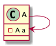
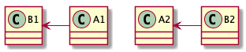

本文基于sublime的PlantUML插件绘制类图。如需了解插件安装，请点击[Sublime安装PlantUML插件](/004)
1 类的UML表示
使用UML表示一个类，主要由三部分组成。类名、属性、方法。其中属性和方法的访问修饰符用 - 、# 、+ 表示 private、protected、public。
如图所示，表示A类有一个private属性，protected 构造函数和public方法。
1 | @startuml |
2 类的关系
在面向对象语言中，类的关系有很多种，可以概括为三类：泛化、依赖、关联。
2.1 泛化
泛化指父类跟子类的关系,表示is-a的关系。如父类是抽象类或普通类，则这种关系叫继承。如，父类是接口，则这种关系叫实现。UML中，继承和实现由不同的标记表示。
2.1.1 继承
PlantUML用 --|> 表示继承关系。实线和三角形的抽象表示，指向谁，即继承谁。
1 | @startuml |
2.1.2 实现
PlantUML用 ..|> 表示实现关系。虚和三角形的抽象表示，指向谁，即实现谁。
1 | @startuml |
2.2 依赖
类之间，最弱的关联方式。常用于在A类的方法中使用B类的对象作为参数、局部变量或者对B类静态方法的调用。
PlantUML用 ..> 表示依赖关系。虚线和箭头的抽象表示，指向谁，即依赖谁。
1 | @startuml |
2.3 关联
关联关系，即对象之间的引用关系。常使用类的属性表达。
2.3.1 单向关联
B类作为A类的属性，表示A类与B类有关联。
PlantUML用 --> 表示单向关联。实线线和箭头的抽象表示，指向谁，即关联谁。
1 | @startuml |
2.3.2 双向关联
B类作为A类的属性同时，A类也是B类的属性，表示双向关联。
PlantUML用 -- 表示双向关联。或者用<-->。
1 | @startuml |
2.3.3 自关联
A类关联A类自身。常见于单例模式。
1 | @startuml |
2.3.4 聚合
在关联关系的基础上，延伸出聚合关系，强的关联关系，表示has-a关系。整体与部分的关系，部分不依赖于整体，可独立存在。常用于成员变量。
如；汽车和轮胎的关系，轮胎可作为独立的商品出售。
PlantUML用 o-- 表示聚合关系。实线和空心菱形的抽象表示，指向谁，表示谁是整体。
1 | @startuml |
图中数字1和4也表示一对多关联。N对N同理。
2.3.5 组合
在关联关系的基础上，延伸出另外一种关联关系，组合关系，表示contains-a关系。整体与部分的关系，部分依赖于整体，不可独立存在。常用于成员变量。
如：身体和动作的关系。
PlantUML用 *-- 表示聚合关系。实线和实心菱形的抽象表示，指向谁，表示谁是整体。
1 | @startuml |
3 PlantUML排版
相比较其他的UML软件或插件。PlantUML的优势在于，存储的是文本文件，可以方便的进行团队协作以及高度可定制化的依赖关系。但是，最大的缺点在于，排版是通过插件自动生成的，排版效果不尽人意。因此，PlantUML提供四个关键字 up down left right。指定类与类之间的相对关系。
3.1 default
1 | @startuml |
箭头向左时，被指向对象在上；
箭头向右时，被指向对象在下。
3.2 up
1 | @startuml |
使用up时，被指向对象在上。
3.3 down
1 | @startuml |
使用down时，被指向对象在下。
3.4 left
1 | @startuml |
使用left时，被指向对象在左。
3.5 right
1 | @startuml |
使用right时，被指向对象在右。
4 总结
画类图，只是PlantUML的功能之一，还可以使用它画用例图、顺序图、活动图。更多用法，请关注后续博客或访问官网。
觉得有用？那打赏一个呗。[去打赏](/donate/)